基质流体流动
引言
除节理流动（见节理流体流动（Joint Fluid Flow））外，3DEC 还可模拟块体或基质，即节理之间的流动。假定块体表示饱和可渗透固体，例如土或裂隙岩体。基质流动与节理流动耦合，使节理流体可进入周围基质，即滤失。与节理流动相同，基质流动可独立于 3DEC 常规力学计算单独模拟，也可与力学建模同步进行，捕捉流固相互作用。
流动功能具有以下特征。
- 可为不同网格单元赋予不同渗透性。目前仅支持各向同性渗透性。
- 可规定流体压力、通量和不透水边界条件。
- 可在材料中设置点源或体积源形式的流体源，即井。这些源对应规定的流体流入或流出，并可随时间变化。
- 任意力学和热学模型都可与流动模型结合。耦合问题允许考虑饱和材料可压缩性及热膨胀。
本节分为若干小节。
- 流动及流固耦合过程的数学模型和相应数值公式，见 3DEC 流固计算公式（Fluid-Mechanical Formulation）和数值公式（Numerical Formulation）。
- 流动分析的属性与单位（Properties and Units for Fluid Flow Analysis）讨论分析所需材料属性及适当单位。
- 流动边界条件、初始条件、源和汇（Fluid-Flow Boundary Conditions, Initial Conditions, Sources, and Sinks）讨论初始条件，并介绍可施加于 3DEC 模型的不同边界条件和流体源汇。
- 涉及流动分析的计算模式和相关命令，见流固相互作用的计算模式（Calculation Modes for Fluid-Mechanical Interaction）；两个验证问题见验证示例（Verification Examples）。
注意，本节使用的流动属性与单位汇总见本手册 Section 6 ← 修复该处，3DEC 命令汇总见 Section 7。← 该处也需修复
3DEC 流固计算公式——数学描述
本节讨论流体流动和流固耦合模拟。
约定与定义
按符号约定，\(a_i\) 表示笛卡尔参考坐标系中矢量 \(\{ a \}\) 的 \(i\) 分量；\(A_{ij}\) 为张量 \([A]\) 的 \((i,j)\) 分量。还用 \(f_{,i}\) 表示 \(f\) 对 \(x_i\) 的偏导数。符号 \(f\) 可表示标量变量或矢量分量。
爱因斯坦求和约定仅适用于下标 \(i\)、\(j\) 和 \(k\)，其在涉及空间维数的分量中取 1、2、3。用于矩阵方程时，下标可取任意值。
采用国际单位制说明参数和变量量纲。转换至其他单位制见单位制（System of Units）。
以下参考量有助于表征瞬态流动。
特征长度：
流体扩散率：
其中，\(k\) 为迁移率系数，即 3DEC 渗透系数；\(M\) 为 Biot 模量；\(\alpha\) 为 Biot 系数；\({\alpha}_1 = K + 4/3 G\)，\(K\) 为排水体积模量；\(G\) 为多孔材料剪切模量。
Biot 系数考虑多孔材料颗粒可压缩性。若 \(\alpha\) 等于 1，则颗粒视为不可压缩，Biot 模量 \(M\) 等于 \(K_f / n\)，其中 \(K_f\) 为流体体积模量，\(n\) 为孔隙率。此时流体扩散率为
在 3DEC 中，Biot 系数始终为 1，即颗粒不可压缩。
注意，对于仅流动计算，即刚性材料，流体扩散率为
这些属性关系的更多讨论，见流动分析的属性与单位（Properties and Units for Fluid Flow Analysis）。
控制微分方程
描述多孔材料流固响应的微分方程如下。
输运定律
流体输运由 Darcy 定律描述：
其中，\(q_i\) 为比流量矢量，\(p\) 为流体孔隙压力，\(k\) 为介质绝对迁移率系数张量，即 3DEC 渗透系数张量；\(\rho_f\) 为流体密度；\(g_i\)、\(i\) = 1,3 表示重力矢量三个分量。
供后文引用，将 \(\phi = (p - \rho_f x_j g_j) / (\rho_f g)\) 定义为水头，其中 \(g\) 为重力矢量模；将 \(\rho_f g \phi\) 定义为压力水头。
平衡定律
小变形情况下，流体质量平衡可表示为
其中，\(q_v\) 为体积流体源强度，单位为［1/sec］；\(\zeta\) 为 Biot（1956）引入的流体含量变化，即扩散质量输运引起的单位多孔材料体积中的流体体积变化。
动量平衡形式为
其中，\(\rho = \rho_d + n s \rho_w\) 为总体密度，\(\rho_d\) 和 \(\rho_w\) 分别为干基质与流体密度，\(n\) 为孔隙率，\(s\) 为饱和度。
在 3DEC 中，饱和度始终为 \(s\) = 1。
本构关系
流体含量的变化与孔隙压力 \(p\)、饱和度 \(s\) 和力学体积应变 \(\epsilon\) 的变化有关。孔隙流体响应方程为
多孔固体本构响应形式为
其中，左侧量为 Terzaghi 有效应力；\(H\) 为本构关系的函数形式，\(K\) 为历史参数，\(\xi_{ij}\) 为应变率。
特别地，有效应力与应变的弹性关系为小应变形式：
相容方程
应变率与速度梯度关系为
数值公式
引言
将流体质量平衡式 (6) 代入孔隙流体本构方程式 (8)，得到流体连续性方程：
3DEC 数值方法将流动域离散为四节点四面体网格单元。适用时，力学与热学计算使用相同离散。孔隙压力假定为节点变量。
数值方案基于流体连续性方程的有限差分节点形式。该公式可类比于产生牛顿定律节点形式的力学常应力公式：分别用孔隙压力、比流量矢量和孔隙压力梯度，替代速度矢量、应力张量和应变率张量。所得常微分方程组采用默认的显式时间离散求解。
主要结果汇总于下文饱和流体流动（Saturated Fluid Flow）。从力学平衡状态出发，3DEC 水力—力学耦合静力模拟包含一系列步骤。每步包括一个或多个流动步，即流动循环，随后执行足够多力学步，即力学循环，以保持准静态平衡；也可通过 block gridpoint initialize pore-pressure、block insitu pore-pressure 或 block water table 初始化。
饱和流体流动
本节考虑始终完全饱和介质中的流动。
空间导数的有限差分近似
按约定，四面体节点局部编号为 1 至 4；面 \(n\) 与节点 \(n\) 相对，上标（\(f\)）表示有关变量在面 \(f\) 上的值。
假定四面体内孔隙压力线性变化、流体密度恒定。应用高斯散度定理，可将压力水头梯度用节点孔隙压力表示为
其中，\({n}^{(l)}\) 为面 \(l\) 的外单位法向矢量，\(S\) 为面面积，\(V\) 为四面体体积。
为提高数值精度，可在式 (13) 压力水头表达式中，用 \(x_i - x_i^1\) 替代 \(x_i\)，其中 \(x_i^1\) 对应四面体某角点坐标，不影响压力水头梯度值。于是，式 (13) 变为
其中，节点量 \(p^{*l}\) 定义为
质量平衡方程的节点公式
对于完全饱和流动，\(s\) 恒等于 1，流体连续性方程式 (12) 可表示为
其中
等效于力学节点公式中的瞬时“体积力” \(\rho b_i\)，以及
先考虑单个四面体。利用该类比，与四面体比流量及体积源强度 \(b^*\) 等效的节点流量 \(Q_e^n\)［m3/s］、\(n\) = 1,4，可表示为
其中
以及
原则上，质量平衡节点方程要求：在每个全局节点，汇聚于该点的四面体等效节点流量（\(-Q_e^n\)），与所施加边界通量及源的节点贡献（\(Q_w^n\)）之和为零。
式 (19) 的四面体比流量矢量分量，通过输运定律（见式 (50)）与压力水头梯度相关；后者又可通过式 (14)，用四面体节点孔隙压力表示。
为节省计算时间，组装局部矩阵。采用网格单元公式，将汇聚于节点 \(n\) 的全部四面体按式 (19) 求和，形成贡献 \(Q_z^n\)。组装局部网格单元矩阵 \([M]\)，将四个节点值 \(\{ Q_z \}\) 与八个节点压力水头 \(\{ p^{*} \}\) 关联。由于矩阵对称，只需计算 10 个分量，并在计算开始时保存。根据网格单元矩阵定义，有
其中，\(\{ p^* \}\) 为该网格单元局部节点压力水头矢量。
随后，叠加各网格单元贡献，获得全局节点值 \(Q_T^n\)。略微扩展符号用法，对每个全局节点 \(n\) 写为，
其中，\([C]\) 为全局矩阵，\(\{ p^* \}\) 在此为全局节点压力水头矢量。
回到前述讨论，可写为
其中，为简化符号，以 \(\sum\) 表示对汇聚于全局节点 \(n\) 的全部网格单元贡献求和。每个网格单元贡献由其内部四面体贡献组成。在式 (24) 中，\(Q_e^n\) 采用式 (19)、\(q_v^*\) 采用式 (18)，经整理得到
其中，\(Q_T^n\) 是由式 (23) 结合式 (15) 定义的节点孔隙压力函数；\(\sum Q_{app}^n\) 为所施加体积源、边界通量和点源的已知贡献，形式为
式 (25) 为节点 \(n\) 的质量平衡节点方程，右侧 \(Q_T^n + \sum Q_{app}^n\) 称为不平衡流量。流体静止，即关闭流动计算时，不平衡流量为零，孔隙压力仅由力学和／或热学变形改变。
在 3DEC 中，Biot 模量是节点属性，由式 (21) 可写为
其中
其中
离散中的每个全局节点都满足式 (29) 这样的表达式。它们共同组成常微分方程组，3DEC 针对给定 \(d p_v^n / dt\)，采用显式有限差分方案求解。
显式有限差分公式
显式公式假定节点量 \(p−p_v\) 在时间间隔 \(\Delta t\) 内线性变化。原则上，式 (29) 左侧导数采用前向有限差分表示，不平衡流量在时刻 \(t\) 求值。从初始孔隙压力场出发，对未固定压力的节点，用以下表达式逐时间增量更新孔隙压力：
其中
以及
只有时间步长保持低于某一限值，显式方案才能达到数值稳定。
稳定性准则
为推导流动计算稳定性准则，考虑某网格单元集合的节点 \(n\)，从零初始状态施加孔隙压力扰动 \(p_0\)。使用式 (23) 可得
一个流体时间步后，节点 \(n\) 新孔隙压力为，见式 (31) 至 (38)：
为防止连续 \(\Delta t\) 计算中孔隙压力符号交替，上述关系中的 \(p_0\) 系数必须为正。这要求
3DEC 采用的孔隙—力学时间步长，为式 (37) 右侧各节点值的最小值，再乘以安全系数 0.8。
为评估有关参数的影响，牢记以下临界时间步长表示很有帮助。若 \(L_c\) 为最小四面体特征长度，可写出如下形式的表达式：
其中，\(\Delta t_{cr}\) 为临界时间步长，\(c\) 为流体扩散率，\(a\) 为大于 1、取决于介质几何离散的常数。例如规则立方体离散时 \(a\) = 6，热学类比见 Karlekar 和 Desmond（1982）。
式 (38) 的临界时间步长，衡量扩散“前缘”传播穿过四面体所需特征时间。估计前缘传播穿过特定域的时间时，可采用类似表达式，但将 \(L_c\) 理解为该域特征长度。考虑无泄漏且属性均匀的情况，比较域和四面体的特征时间，可见模拟扩散穿过整个域所需步数，正比于二者特征长度平方之比。这一步数可能很大，使单独使用显式法难以承受。但许多地下水问题中，这种一阶方法的优点是计算时间步通常足够小，能够准确跟踪节点孔隙压力波动。
力学时间步长与数值稳定性
流体存在会提高介质表观力学体积模量，进而影响 3DEC 为数值稳定所用密度缩放方案中的节点质量。可考虑 \({{\partial\zeta}\over{\partial t}}\) = 0 的不排水孔隙—力学条件，得到表观模量上限。此时流体本构关系式 (8) 的增量形式为
采用弹性关系式 (10) 的增量形式，描述一个时间间隔内应力—应变本构关系的体积部分，可写为
计算节点惯性质量时，使用该表观切线体积模量 \(K + M\) 代替 \(K\)。
还应注意，3DEC 输入的是介质干密度 \({\rho}_d\)。根据输入流体密度 \({\rho}_f\)、孔隙率 \(n\) 和饱和度 \(s\)，内部计算饱和密度 \(\rho = {\rho}_d + n s{\rho}_f\)，随后相应调整牛顿运动方程中的体积力。
总应力修正
3DEC 首先计算节点孔隙压力，再通过节点值算术平均获得网格单元孔隙压力。
随后，按照 Terzaghi 有效应力定义，通过添加增量 \(\Delta \sigma_{ij}\) 调整总应力，以考虑孔隙压力变化贡献，见式 (13)。应力增量 \(\Delta \sigma_{ij}\) 表示为
其中
为流动贡献，以及
为热力耦合贡献。此外，表达式中的上划线表示上述意义的网格单元平均。
流动分析的属性与单位
3DEC 流动相关属性为渗透系数 \(k\)、流体质量密度 \(\rho_f\)、流体体积模量 \(K_f\) 和孔隙率 \(n\)，下面分别讨论。
渗透系数
3DEC 使用的各向同性渗透系数 \(k\)，例如国际单位制的 m2/(Pa/sec)，在文献中也称为迁移率系数。它是 Darcy 定律压力项的系数，与水力传导系数 \(k_h\)，例如 m/s，关系为
其中，\(g\) 为重力加速度。
固有渗透率 \(\kappa\)，例如单位 m2，与 \(k\) 的关系为：
其中，\(\mu\) 为动力黏度，例如 N-sec/m2。
可通过式 (45) 或 (46)，由速度单位的 \(k_h\)，或［长度］2 单位的 \(\kappa\)，推导 3DEC 所需的 \(k\)。请记住，\(k\) 最终单位必须为［L3 T/M］，例如国际单位制的 m3 sec/kg，或 m2/Pa-sec。采用 20°C 水的 \(\mu\) = 1.011 × 10-3 kg/(m-sec)、\(\rho_w g\) = 9.81 × 103 Pa/m，以及 1 Darcy = 10-8 cm2，可推导以下换算，将水的 \(k\) 转为国际单位制：
\(k\)（国际单位制）≡ \(\kappa\)（cm2）× 9.9 × 10−2
\(k\)（国际单位制）≡ \(k_h\)（cm/sec）× 1.02 × 10−6
\(k\)（国际单位制）≡ 以毫达西表示的渗透率 × 9.8 × 10−13
若网格中渗透性变化，时间步长将由最大渗透性控制，见式 (38)。对于只需要稳态而不关注瞬态行为的问题，限制渗透性变化幅度可能提高收敛速度。例如，当流动完全从一种渗透性区域进入另一种区域时，渗透性变化 20:1 与 200:1 的系统，其最终状态可能差异很小。
各向同性渗透系数是用 zone 命令指定的网格单元属性。
质量密度
不同情况下，可向 3DEC 输入三种质量密度：固体基质干密度 \(\rho_d\)、固体基质饱和密度 \(\rho_s\)，以及流体密度 \(\rho_f\)。注意，仅在指定重力加载时需要密度。
如果 3DEC 配置流动（model configure matrixflow），则必须使用固体干密度。3DEC 根据已知流体密度和孔隙率 \(n\)，计算各单元饱和密度：\(\rho_s = \rho_d + n \rho_f\)。
只有在进行有效应力计算（静态孔隙压力分布）且未采用 model configure matrixflow 模式时，才需要输入饱和密度。block water table 命令、block gridpoint initialize pore-pressure 命令或 block insitu pore-pressure 命令用于指定地下水位的位置。地下水位以上的网格单元指定干密度，地下水位以下的网格单元指定饱和密度。
使用 block zone property density 命令指定固体密度（干密度或饱和密度）。使用 block fluid property density 命令全局指定流体密度。在 3DEC 中，所有密度都是网格单元变量，且均为质量密度（例如，国际单位制中的 kg/m3）。
流体体积模量
流体体积模量 \(K_f\) 定义为
其中，\(\Delta P\) 是体积应变为 \(\Delta V_f / V_f\) 时的压力变化。
流体的“压缩系数”\(C_f\) 是 \(K_f\) 的倒数（即 \(C_f = 1/K_f\)）。例如，室温下纯水的 \(K_f\) = 2 × 109 Pa（国际单位制）。在实际土体中，孔隙水可能含有一些溶解空气或气泡，这会显著降低其表观体积模量。例如，Chaney（1978）指出，对于压实砂中饱和度为 99% 的气水混合物，流体模量可降低一个数量级。对于地下水问题，网格不同部位的水体积模量可以不同，以考虑空气含量的变化。可以使用 FISH 函数按某种规律改变局部模量（例如，使模量与压力成正比以表示气体），但用户应谨慎，避免作出不符合物理实际的假设。
流体模量与收敛
如果需要求解稳态渗流，模量 \(K_f\) 对数值收敛过程并不重要，因为系统响应时间和时间步长均与 \(K_f\) 成反比：所需步数相同，与 \(K_f\) 无关。
对于瞬态或耦合分析，扩散率受流体刚度与基质刚度之比控制。体积模量较低时求解较快，但由于时间与扩散率有关，不能将体积模量任意设为很低的值。不过，从数值角度看，模拟中无需采用大于 20 倍（\(K +4/3G)n\) 的 \(K_f\) 值（见储水性、扩散率和时间步长（Storage, Diffusivity, and Timestep））。
流体模量是用 block fluid property bulk 命令设置的全局变量。
排水和不排水分析中的流体模量
在 3DEC 中，只要选定了流体体积模量并指定了 model configure matrixflow，就必须为固体基质指定排水体积模量。随后，程序将计算固体基质的表观（不排水）体积模量，该模量会随时间演化。
也可以在不指定 model configure matrixflow 的情况下进行不排水分析。此时应指定固体基质的不排水体积模量 \(K_u\)。不排水体积模量为
孔隙率
孔隙率 \(n\) 是一个无量纲数，定义为单元孔隙体积与总体积之比。它与孔隙比 \(e\) 的关系为
若未指定，\(n\) 的默认值为 0。\(n\) 应取 0 到 1 之间的正数，但使用较小值（例如小于 0.2）时应格外谨慎，因为孔隙流体的表观刚度与 \(K_f /n\) 成正比。当 \(n\) 较低时，该刚度可能远大于固体材料的刚度，使 3DEC 求解需要很长时间才能收敛。这种情况下可考虑减小 \(K_f\)（进一步指导见储水性、扩散率和时间步长（Storage, Diffusivity, and Timestep））。
3DEC 使用孔隙率计算介质的饱和密度，并在输入流体体积模量时计算 Biot 模量。3DEC 在计算循环中不更新孔隙率，因为这一过程耗时，且只会影响瞬态响应曲线的斜率。孔隙率是使用 zone 命令指定的网格单元属性。
流体渗流边界条件、初始条件、源和汇
边界默认是不透水的；所有网格点/流动节点初始都是“自由”的（即这些节点处的孔隙压力可随相邻网格单元的净流入与流出自由变化）。也可以对任一流动节点设置相反的 bound pp 条件。一般而言，若孔隙压力固定，流体可以在外部边界处流入或流出网格。
可使用 flowknot apply pore-pressure 命令向块体边界或内部渗流节点赋予孔隙压力。flowknot apply discharge 命令可向范围内的渗流节点施加给定的流入量或流出量（体积／时间）。
可使用 block gridpoint initialize pore-pressure、block water table 或 block insitu pore-pressure 命令指定孔隙压力的初始分布。初始分布必须与重力值、给定水密度以及网格内孔隙率值所决定的重力梯度保持一致。如果初始分布不一致，计算开始时所有网格单元都可能发生渗流。建立模拟时，应先计算几步以检查这种可能性。
如果模型包含节理，则会沿节理初始化有效应力（即在初始化网格应力时，接触应力中将考虑孔隙压力的存在）。无论是否指定 model configure matrixflow，都会执行这一操作。沿节理的渗流（例如裂隙渗流）见“节理流体渗流（Joint Fluid Flow）”。
流固相互作用的计算模式
孔隙压力分析所需的计算模式与命令，取决于网格是否已配置流体流动（即是否已指定 model configure matrixflow 命令）。
指定 model configure matrixflow 时，流动计算可以独立于力学变形计算进行，也可以与其耦合。可进行的各种耦合类型在下文小节中说明。
网格未配置流体流动
如果未执行 model configure matrixflow 命令，就无法进行流体渗流分析，但仍可向网格点和节理接触赋予孔隙压力。在这种计算模式下，孔隙压力保持不变，但使用塑性本构模型时，可能诱发由有效应力状态控制的破坏。此外，节理会响应指定的孔隙压力而产生变形和破坏。有关这一模式的详细说明见“3DEC 中的孔隙压力（Pore Pressure in 3DEC）”。
网格已配置流体流动
执行 model configure matrixflow 命令后，可以进行瞬态流体渗流分析，孔隙压力也可以发生变化。执行 model configure matrixflow 后，孔隙压力在渗流节点处计算，而不是在网格点处计算。每个网格点都有一个对应的渗流节点，但块体边界处除外：节理两侧的网格点共用一个渗流节点。这确保了裂隙渗流与基质渗流相互耦合。每一步都会将渗流节点压力复制到对应网格点，并通过平均计算网格单元孔隙压力。
在 model configure matrixflow 模式下，既可以进行有效应力（静水孔隙压力分布）计算，也可以进行不排水计算。此外还可以进行完全耦合分析，其中孔隙压力的变化引起变形，而体积应变又使孔隙压力发生变化。
如果网格已配置为进行流体渗流计算，用户必须赋予干密度（水位以下和以上均如此），因为 3DEC 在体力计算中会考虑流体的影响。
流体属性赋予网格单元。网格单元流体属性包括各向同性渗透率和孔隙率，使用 block zone fluid property 命令赋予。流体密度和流体体积模量使用 block fluid property 命令赋予。
可使用 block zone list fluid 命令输出网格单元流体属性。flowknot list 命令可输出渗流节点信息，包括体积和压力。流体密度以及地下水位位置（如已指定）可使用 block list water 命令输出。可通过 –> –> –> 绘制流体渗流属性）。
在 model configure matrixflow 模式下，网格点／渗流节点初始孔隙压力分布的赋予方式与非 model configure matrixflow 模式相同，即使用 block gridpoint initialize pore-pressure 命令、block insitu pore-pressure 命令或 block water table 命令。可使用 flowknot apply pore-pressure 命令固定边界网格点／渗流节点的孔隙压力。可使用 flowknot apply discharge 或 flowplane edge apply discharge 命令施加流体源和汇。流体渗流边界条件、初始条件、源和汇（Fluid-Flow Boundary Conditions, Initial Conditions, Sources, and Sinks）介绍了各种流体渗流边界条件和初始条件。
流体渗流求解由 model fluid 和 model solve 命令控制。有多个关键字可辅助求解过程。例如，model fluid active on 或 off 用于开启或关闭流体渗流计算模式。这些命令和关键字的应用取决于流体渗流分析所需的耦合程度，具体见以下各小节。
流体渗流分析结果可通过多种形式获取。block gridpoint list pore-pressure 和 block zone list pore-pressure 命令分别输出网格点和网格单元孔隙压力。使用 flowknot list 输出渗流节点信息。可使用 flowknot history pore-pressure 命令监测渗流节点孔隙压力历史。对于瞬态计算，可使用 model history fluid time-total 命令监测渗流时间，从而绘制孔隙压力随实际时间变化的曲线。绘制网格点孔隙压力等值云图（位于 –> –> –> ）。可通过 –> –> –> 绘制比流量矢量）。多个流体渗流变量可通过 FISH 访问。
储水性、扩散率和时间步长
流体通过介质的速率取决于渗透率和储水系数。储水系数为
其中，\(K\) 为排水体积模量，\(G\) 为剪切模量。左侧项表示流体储水性，右侧项仅取决于基质刚度。由此，扩散率为
因此，流体通过介质的速率与渗透率成正比，与储水性成反比。这意味着渗流速率与流体体积模量和基质模量成正比。流体越刚硬，渗流越快，因此时间步长越小。
流体时间步长仅取决于流体扩散率（在式 (51) 中仅采用式 (50) 的左侧项计算）。它还取决于最小网格单元尺寸 \(L_z\)
由此可见，降低流体体积模量会增大时间步长。
在耦合渗流问题中，实际扩散率受流体刚度与基质刚度之比控制
如果 \(R_k\) 很大（即流体刚度远大于基质刚度），计算得到的时间步长（式 (52)）将非常小，而问题的扩散率由基质控制。可减小 \(K_f\) 的值，以增大时间步长，更快地计算至稳态。如果减小 \(K_f\)，使 \(R_k\) = 20，则扩散率与无限刚性流体扩散率的差异应在 5% 以内。注意，在任何情况下，都不应使 \(K_f\) 高于流体的实际物理值（水为 2 GPa）。
扩散过程的特征时间也是有助于选择流体渗流计算方法的一个有用量，如式 (54) 所示。
力学过程的特征时间由式 (55) 给出。
仅渗流计算
可进行仅渗流计算，以确定某一系统中独立于任何力学效应的流量和压力分布。渗透率较大或力学加载较慢时，这种方法很有用；此时孔隙压力很快达到平衡，可以忽略力学加载对孔隙压力的影响。在这种情况下，可使 3DEC 运行于流体渗流模式，而不进行任何力学计算。之后可以进行力学计算，也可以不进行。
仅渗流计算命令流程的第一步是执行 model configure matrixflow 命令，以便为流体渗流计算分配额外内存。应使用 model mechanical active off 命令禁用力学计算。
必须为所有可能发生流体渗流的网格单元指定流体渗流属性。赋予初始条件和边界条件后，即完成流体渗流问题的设置。例如，可通过 flowknot apply discharge 命令，配合与该区域边界对应的 range 关键字，赋予通量边界条件。开挖的网格单元会自动在流体渗流计算中置为空单元。
可使用 model step 命令执行给定步数的流体渗流计算。目前，3DEC 中的流体渗流计算除指定求解时间外，不具备 model solve 求解功能。停止渗流计算的方法见以下各小节。
如果随后要将计算得到的孔隙压力分布用于孔隙压力可假定保持不变的力学计算，应执行 model fluid active off 和 model mechanical active on 命令。还应将流体体积模量设为零，以防止力学变形产生额外的孔隙压力。
稳态
将仅渗流问题求解至稳态时，时间并不重要。根据式 (52)，减小流体体积模量会增大时间步长，但达到平衡所需的时间也会增加；因此，求解所需计算时间不取决于 \(K_f\) 的选取。目前 3DEC 中没有针对流体的 model solve 命令，因此用户必须监测某个量（如孔隙压力），以判断是否已达到稳态条件（即孔隙压力随时间的变化可以忽略）。类似地，渗透率的绝对值并不重要，但渗透率之间的差异很重要。
下面给出一个简单示例。创建一个高 20 m 的一维柱体，将底部孔隙压力保持为 1 KPa，顶部保持为 0。图 1（Figure 1） 显示了两点处孔隙压力的演化，图 2（Figure 2） 显示了最终孔隙压力和流量矢量。
Fluid1DFlowCalculation

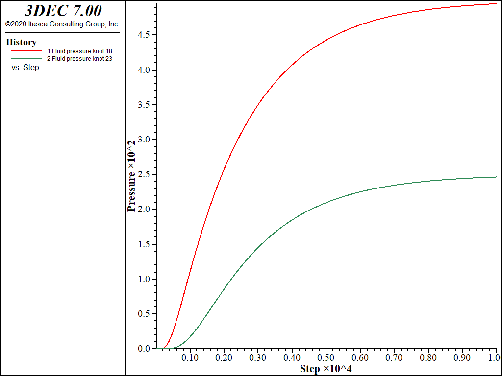
图 1：稳态模型中两点处的孔隙压力历史。

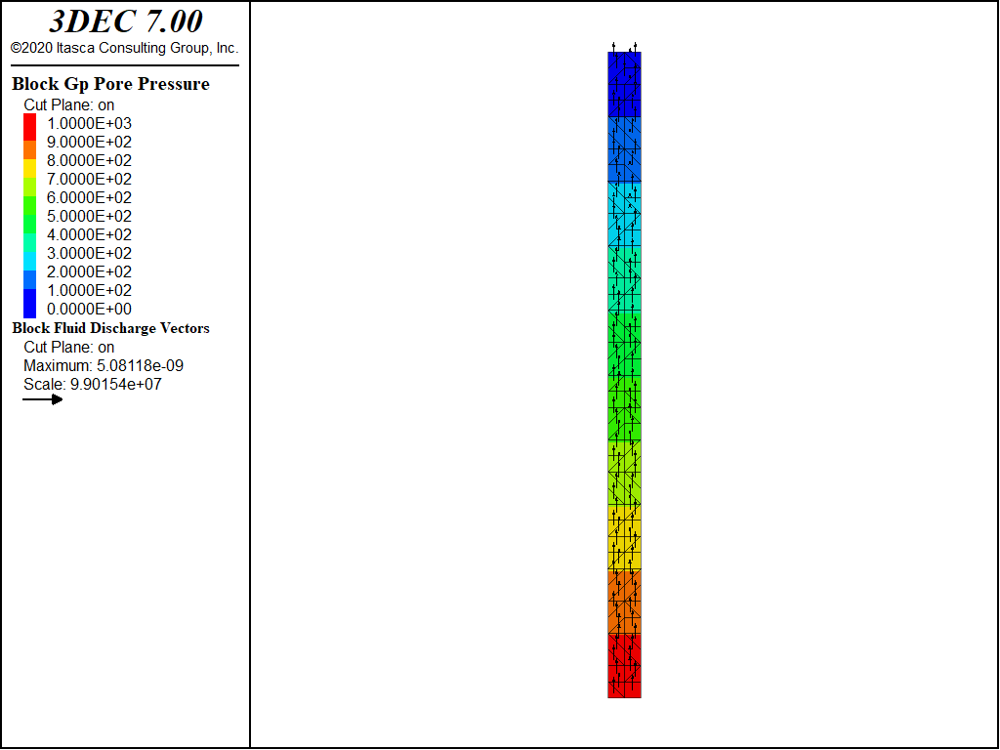
图 2：稳态模型计算 10,000 步后的孔隙压力和流量矢量。
瞬态
在时间很重要的情况下，不能任意设置流体体积模量。渗流速率取决于式 (50) 中的储水系数，但在仅渗流计算中不考虑力学作用，因此不会计算基质刚度的贡献（式 (50) 中的右侧项）。所以，用户必须调整流体体积模量以考虑这一储水项。此时的表观流体体积模量为
使用这一流体体积模量值重新运行稳态示例，此时即可观察孔隙压力随时间的演化（图 3（Figure 3））。可使用 model solve fluid time 指定计算时长。结果看起来与稳态情况相同，区别是现在 \(x\) 轴显示流体时间。采用这一方法的瞬态解验证见示例“Fluid1DTransientFlow”。
Fluid1DTransientFlow

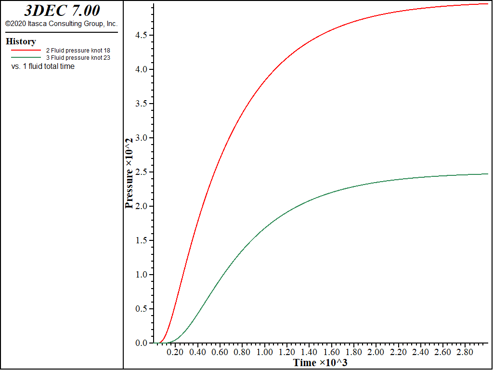
图 3：瞬态渗流示例中的孔隙压力历史
无渗流——力学作用产生的孔隙压力
在渗透率很低或加载很快的情况下，力学加载引起孔隙压力变化的速度快于其消散速度。在 3DEC 中，可将网格配置为流体渗流模式（model configure matrixflow），但关闭流体渗流计算（model fluid active off），以分析这种不排水（短期）响应。为流体模量赋予实际值，并开启力学计算（model mechanical active on）。这样，力学变形就会产生孔隙压力。例如，可用这种方式计算基础荷载引起的“瞬时”孔隙压力。
如果流体体积模量远大于固体体积模量，收敛将很慢；此时可能可以降低流体体积模量，而不显著影响响应行为（见储水性、扩散率和时间步长（Storage, Diffusivity, and Timestep））。
下面的数据文件演示了箱体内弹塑性材料在基础荷载作用下产生的孔隙压力累积。箱体左边界为对称线，顶面孔隙压力固定为零，以防止该处产生孔隙压力。孔隙率设为 0.5；由于不计算渗流，因此不需要渗透率。
undrained.dat
model new
model random 10000
model config matrixflow
model large-strain off
block create brick 0 21 0 1 0 10
block densify segments 7 1 4 join
block zone generate edgelength 0.5 range position-x 0 6 position-z 4 10
block zone generate edgelength 1
;
; --- 力学模型 ---
block zone cmodel assign mohr-coulomb
block zone property dens 2000 bulk 5e7 shear 3e7 ...
friction 25 cohesion 1e5 tension 1e10
block gridpoint apply velocity-x 0 range position-x 0
block gridpoint apply velocity-z 0 range position-z 0
block gridpoint apply velocity-x 0 range position-x 21
block gridpoint apply velocity-y 0 range position-y 0
block gridpoint apply velocity-y 0 range position-y 1
;
; --- 缓慢施加荷载 ---
fish define ramp
ramp = math.min(1.0,float(global.step)/1000.0)
end
block face apply stress-zz -0.3e6 fish ramp range pos-x -0.1 3.1 pos-z 10
; --- 流体流动模型 ---
block zone fluid property porosity 0.5
block fluid property bulk 9e8
;
; --- 将表面孔隙压力固定为 0
flowknot apply pore-pressure 0 range position-z 10
;
; --- 历史 ---
flowknot history pore-pressure position 2 0.5 9
;
; --- 求解不排水工况 ---
model fluid active off
model mechanical active on
block zone nodal-mixed-discretization on
model solve
model save 'load'
由于加载期间会发生大量塑性流动，使用 FISH 函数 ramp 为 bound 命令提供线性变化的乘数，以逐渐施加法向应力。图 4（Figure 4） 显示了孔隙压力等值云图和位移矢量。必须认识到，实际中的塑性流动发生在很短的时间内（秒量级）；这里的“流动”一词容易引起误解，因为与流体渗流相比，它是瞬时发生的。因此，不排水分析（使用 model fluid active off）符合实际情况。

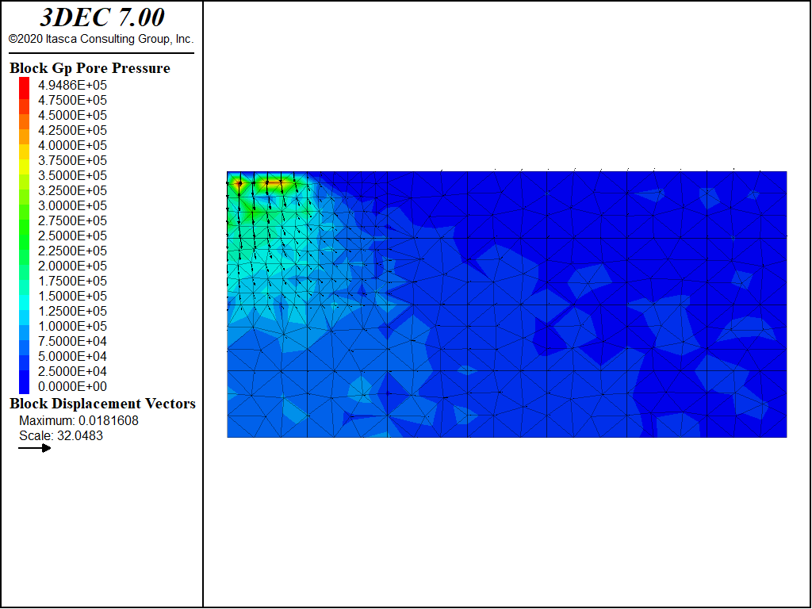
图 4：不排水模型中的孔隙压力和位移。
遗憾的是，线性四面体单元（如 3DEC 中采用的单元）不太适合模拟不排水条件。图 4（Figure 4） 中不均匀的孔隙压力等值线清楚地反映了这一点。目前，3DEC 中的流体渗流算法不适用于六面体网格单元或高阶四面体网格单元。解决这一问题的一种方法是在不启用 model configure matrixflow 的情况下进行不排水模拟。采用这种“干式”方法时，将固体体积模量设为不排水值：
然后使用 block insitu pore-pressure 或 block water table 设置孔隙压力。注意，这种方法假定由力学效应引起的孔隙压力扰动相对于原位孔隙压力较小。
渗流与力学耦合计算
默认情况下，如果网格已配置流体模式，且流体体积模量和渗透率均设为实际值，3DEC 将进行流体渗流与力学耦合计算。3DEC 中的完全流固耦合具有双向作用：孔隙压力变化引起体积应变，从而影响应力；反过来，发生的应变又会影响孔隙压力。
应理解固结与力学加载所对应的相对时间尺度。力学效应几乎瞬时发生（秒或零点几秒量级）。然而，流体渗流是一个漫长过程：与固结有关的消散需要数小时、数天或数周。
可通过考虑耦合过程与不排水过程特征时间的比值来估计相对时间尺度。要得到不排水力学过程的特征时间，在式 (54) 中，对 \(\rho\) 采用饱和质量密度，对 \(K\) 采用式 (48) 定义的不排水体积模量 \(K_u\)。因此，扩散特征时间（式 (54) 和 (55)）与不排水力学特征时间的比值为
多数情况下，\(M\) 约为 1010 Pa，但流动系数 \(k\) 可能相差几个数量级；典型值为
花岗岩为 10−19m2/Pa-sec；
石灰岩为 10−17m2/Pa-sec；
砂岩为 10−15m2/Pa-sec；
黏土为 10−13m2/Pa-sec；以及
砂为 10−7m2/Pa-sec。
对于岩石和土体，\(\rho\) 为 103 kg/m3 量级，而 \(K +4/3G\) 约为 1010 Pa。将这些数量级代入式 (58)，可见流体与力学时间尺度之比的范围为：砂 \(L_c\)、黏土 \(10^6\ L_c\)、砂岩 \(10^8\ L_c\)、石灰岩 \(10^{10}\ L_c\)、花岗岩 \(10^{12}\ L_c\)。如果排除流动系数大于黏土的材料，即使 \(L_c\) 很小，这个比值仍然很大。
因此，在实际应用中，与扩散效应相比，可以假定力学效应瞬时发生。3DEC 也采用这种方法：与流体渗流步一同执行的所有力学步均不计入时间。对于砂等力学与流体时间尺度相近的材料，可考虑使用 3DEC 的动力选项研究流固相互作用。
在大多数建模情况下，初始力学条件对应于平衡状态，开始耦合分析前必须先达到该状态。通常，在流体渗流时间较短时（相对于 \(t_c\) 而言，见式 (54)），每一个流体步都必须配合一定数量的力学步，以达到准静态平衡。在流体渗流时间较长时，如果系统接近稳态渗流，则可连续执行几个流体渗流时间步，而不会显著扰动介质的力学状态。相应的数值模拟可通过在仅渗流模式（model fluid active on 和 model mechanical active off）与仅力学模式（model fluid active off 和 model mechanical active on）之间交替切换来手动控制。model step 命令可用于这两种过程的计算。
另一种方法是使用 model solve 或 model cycle 命令并配合适当设置，从而避免在仅渗流与仅力学模式之间繁琐地切换。默认情况下，如果渗流计算和力学计算均开启，3DEC 每执行一个流体时间步就执行一个力学时间步。一般希望每次力学计算都达到准平衡状态，因此每个流体步可能需要更多力学步。可通过 model mechanical substep n 命令配合 model mechanical slave on 来实现。如果 \(n\) = 100，则每个流体步将执行 100 个力学步。
还可在 model solve 命令中使用 mechanical ratio 关键字设置不平衡力限值，低于该值时认为已达到准静态力学平衡。当不平衡力降至指定限值以下时，力学步进停止，并执行下一个流体步。
在某些情况下，用户可能希望每个力学步执行多个流体步。可使用 model fluid slave on 和 model fluid substep 命令实现。
完全耦合分析
为演示完全耦合分析，我们继续“无渗流——力学作用产生的孔隙压力（No Flow — Mechanical Generation of Pore Pressure）”一节中的基础模拟，采用适当设置计算基础下方的固结。注意，执行 model solve fluid time 命令时，还指定了一个比值。这是因为随着计算进行，力学不平衡力比会降至默认求解阈值（1.0e-5）以下；因此，为确保模拟达到期望的流体时间，必须降低该比值阈值。
数据文件为下面所示的“COUPLED.3DDAT”。
coupled.3ddat（基质）
model restore 'load'
;
; --- 开启流体流动 ---
block zone fluid property permeability 1e-12
block gridpoint initialize displacement 0 0 0
block gridpoint initialize velocity 0 0 0
block initialize velocity 0 0 0
;
; --- 历史 ---
history delete
history interval 1000
model history fluid time
block history displacement-z position 0 1 10
block history displacement-z position 1 1 10
block history displacement-z position 2 1 10
flowknot history pore-pressure position 2 1 9
flowknot history pore-pressure position 5 1 5
flowknot history pore-pressure position 10 1 7
;
; --- 设置力学求解限值 ---
model fluid active on
model mechanical substep 100
model mechanical slave on
;
; --- 求解至一百万秒 ---
;
model mechanical time-total 0
model solve fluid time 1e6 or ratio 1e-4
model save 'age_1e6'
;
计算过程中应留意屏幕输出——发出 model solve 命令后屏幕上会更新八个变量：1) 当前步号；2) 时间；3) 最大（力学）不平衡力；4) 钟表时间；5) 不平衡力比率（力学）；6) 流动时间；7) 本流动步内执行的力学步数；8) 本力学步内执行的流体步数。
本问题的不平衡力比限值设为 1e-4；执行足够多的力学步，使最大不平衡力比保持在此限值以下。但本例中，由 model mechanical substep 定义的力学步数上限设为 100。如果实际执行的力学步数始终等于 model mechanical substep 的设定值，则一定存在问题：可能是力限值或子步数设得过低，也可能是系统不稳定，无法达到平衡。解的质量取决于力容差：容差小，响应平滑且准确，但运行较慢；容差大，可快速得到结果，但结果会有较大波动。
图 5（Figure 5） 显示了基础荷载作用下截至 1,000,000 秒（约 11.5 天）的位移时间历史。本模拟中，地表孔隙压力始终固定为零，因此多余流体向上排出。时程曲线趋于平缓，表明已完成固结。

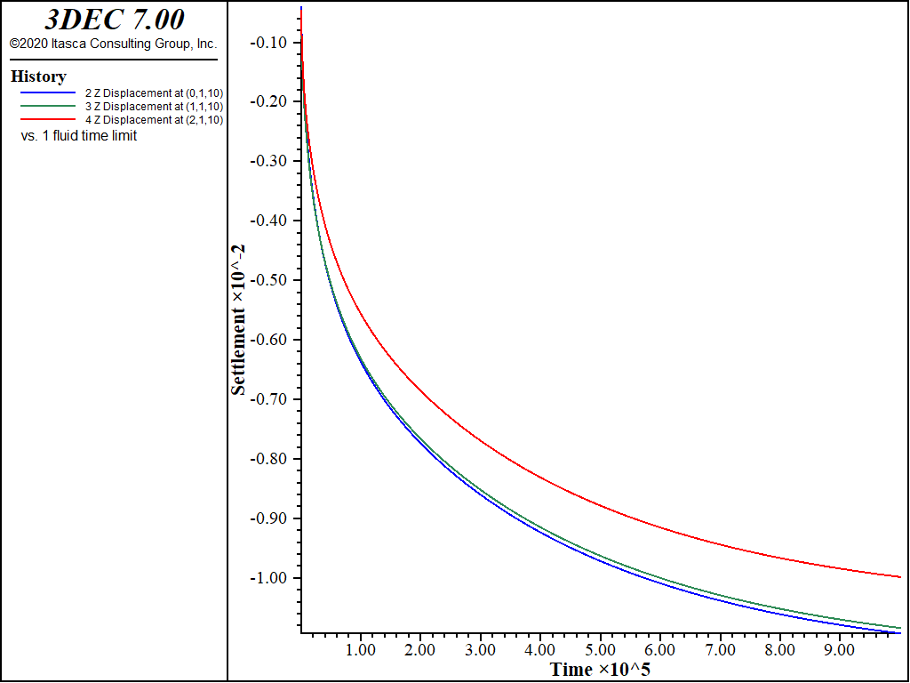
图 5：耦合分析中基础下方的位移时程。
非耦合分析
完全耦合模拟运行所需时间较长。在许多情况下，采用非耦合方法也可得到相当准确的结果。本例展示如何对基础问题采用这种方法。
首先，根据式 (56) 设置流体体积模量，进行仅渗流计算；然后将流体体积模量设为零，进行仅力学计算。图 6（Figure 6） 绘出了非耦合排水模拟的最终位移。最终沉降与耦合渗流结果的差异在 3% 以内。
uncoupled.3ddat
model restore 'load'
;
; --- 开启流体流动 ---
block zone fluid property permeability 1e-12
block gridpoint initialize displacement 0 0 0
block gridpoint initialize velocity 0 0 0
block initialize velocity 0 0 0
;
; --- 历史 ---
history delete
history interval 100
model history fluid time
block history displacement-z position 0 1 10
block history displacement-z position 1 1 10
block history displacement-z position 2 1 10
flowknot history pore-pressure position 2 1 9
flowknot history pore-pressure position 5 1 5
flowknot history pore-pressure position 10 1 7
;
; 进行非耦合求解，直至一百万秒 ---
;
model fluid active on
model mechanical active off
model mechanical time-total 0
;
fish define kfa
kfa = 0.5/((0.5/9e8)+(1.0/(5e7+4.0*3e7/3.0)))
end
;
block fluid property bulk [kfa]
model solve fluid time 1e6
;
;
model fluid active off
model mechanical active on
block fluid property bulk 0
model solve
;
;
model save 'age_1e6_uncoup'
;
;

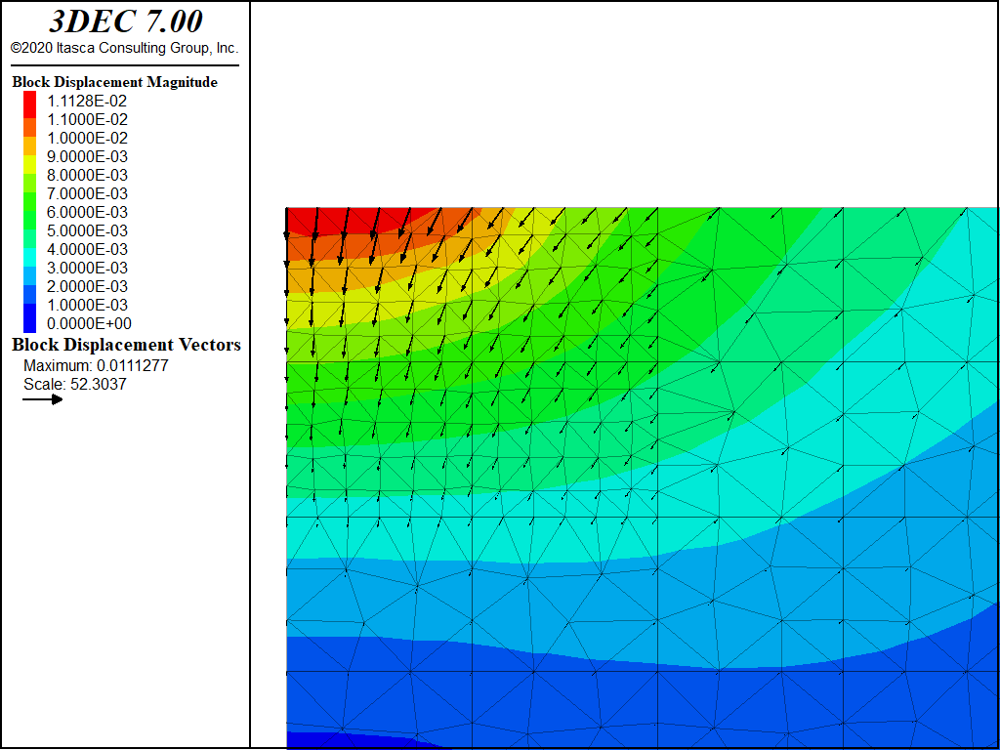
图 6：非耦合分析中基础下方的位移。
完全耦合分析建模方法的选择
如上所示，使用 3DEC 进行完全水力力学耦合分析通常比较耗时，有时也没有必要。以下指南给出了各种建模方法的适用情况。
长期行为（排水响应）
如果所关注的时间远大于特征扩散时间 \(t_c\)（式 (54)），则孔隙压力场可与力学场解耦。稳态孔隙压力可通过仅流体模拟（仅渗流计算（Flow-Only Calculation））确定，也可直接指定孔隙压力，完全不进行渗流计算（孔隙压力和有效应力（Pore Pressure and Effective Stress））。
短期行为（不排水响应）
如果所关注的时间相对于特征扩散时间 \(t_c\)（式 (54)）很短，则流体渗流对模拟结果的影响很可能可以忽略。可按“无渗流——力学作用产生的孔隙压力（No Flow — Mechanical Generation of Pore Pressure）”一节所述进行不排水模拟。
中期行为（耦合响应）——刚硬基质
如果所关注的时间与 \(t_c\) 同量级，且基质相对于流体较刚硬（式 (53) 中 \(R_k\) << 1），则不需要完全耦合模拟。建模方法取决于驱动机制（流体扰动或力学扰动）：
- 在力学驱动的模拟中，可以假定孔隙压力保持不变。可采用无渗流方法（孔隙压力和有效应力（Pore Pressure and Effective Stress））。
- 在孔隙压力驱动的模拟中（如抽取流体引起的沉降），体积应变不会显著影响孔隙压力场，可独立进行渗流计算。先进行仅流体渗流计算（仅渗流计算（Flow-Only Calculation）），再将流体体积模量设为 0，进行仅力学计算（非耦合分析（Uncoupled Analysis））。
中期行为（耦合响应）——柔软基质
如果所关注的时间与 \(t_c\) 同量级，且基质相对于流体较柔软（式 (53) 中 \(R_k\) > 1），则建模方法取决于驱动机制。
- 在力学驱动的模拟中，计算可能很耗时。如“储水性、扩散率和时间步长（Storage, Diffusivity, and Timestep）”所述，可考虑降低 \(K_f\) 的值，使 \(R_k\) = 20，而不会显著影响响应。
- 对于大多数孔隙压力驱动系统的实际问题，经验表明孔隙压力场与力学场的耦合较弱。可能可以先以仅渗流模式进行模拟，再以仅力学模式计算。见非耦合分析（Uncoupled Analysis）。
验证示例
下面给出几个验证问题，展示 3DEC 的流体渗流建模能力。
承压层中的瞬态地下水渗流
一条宽度为 \(L\) = 100 m 的长堤坐落于浅层饱和土层上。堤的宽度（\(L\)）远大于土层厚度，与土体渗透率 \(k\) = 10-12 m2/(Pa sec) 相比，堤体渗透率可忽略。测得土体的 Biot 模量为 \(M\) = 10 GPa。均质土层已达到初始稳态条件。目的是研究上游水位瞬时升高 \(H_0\) = 2 m 时，土层内孔隙压力的变化。这对应于堤上游侧孔隙压力增加 \(p_1 = H_0 {\rho}_w g\)（水密度 \({\rho}_w\) = 1000 kg/m3，重力加速度 \(g\) = 10 m/s2）。图 7（Figure 7） 显示了问题的几何形状。
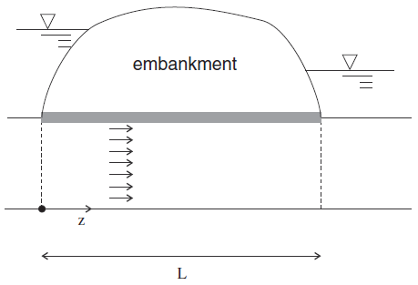
图 7：土层中的承压渗流。
可假定土层中的渗流为一维。模型宽度为 \(L\)。初始为零的超孔隙压力 \(p\) 在模型一端突然升至 \(p_1\)。相应解析解的形式为
其中，\(z\) 轴沿堤的宽度方向，其原点位于上游侧，\(\hat{p} = {p\over p_1}\)、\(\hat{z} = {z \over {L}}\)、\(\hat{t} = c t/L^2\) 和 \(c = M k\)。
在 3DEC 模型中，土层定义为由 25 个连接块体构成的柱体。\(z\) = 0 处的面上，超孔隙压力固定为 2 ×104 Pa；\(z\) = 100 m 处的面上，超孔隙压力固定为零。模型网格见图 8（Figure 8）。
将解析解编写为 FISH 函数，以便在对应于 \(\hat{t}\) = 0.05、0.1、0.2 和 1.0 的选定流体渗流时刻，直接与数值结果比较。这些时刻的孔隙压力解析结果和数值结果存储在表格中。

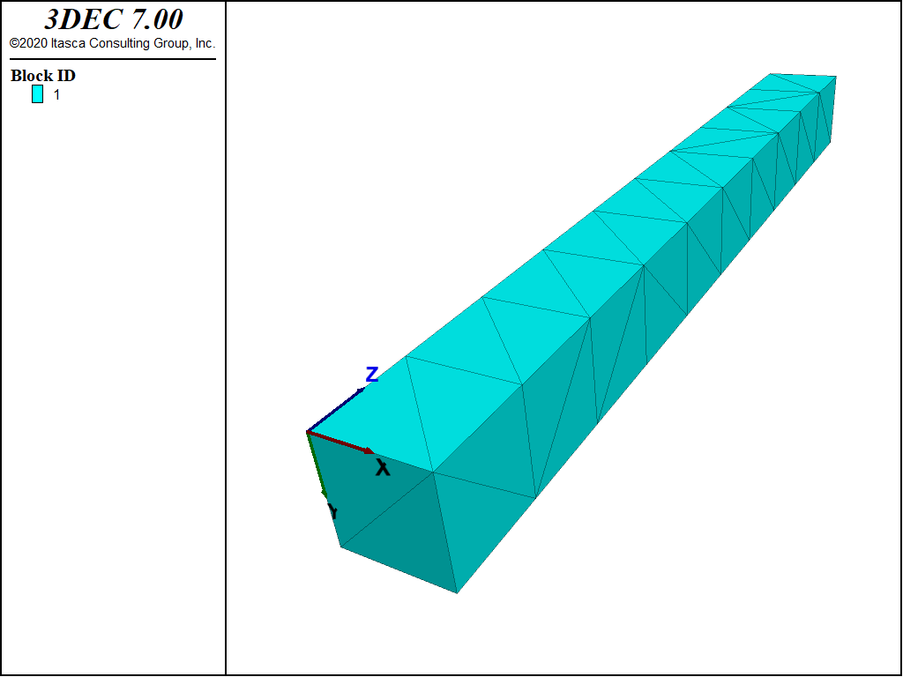
图 8：承压土层流体渗流的 3DEC 网格。
示例“verification-transient.dat”包含本问题的 3DEC 数据文件，采用显式格式求解。对应的项目文件“verification-transient.3dprj”位于“datafiles\Fluid-flow\matrix flow”文件夹。图 9（Figure 9） 对比了显式解在四个流体渗流时刻的超孔隙压力解析值和数值值。图中绘出了归一化超孔隙压力（\(p/p_1\)）随归一化距离（\(z/L\)）的变化，其中表 2、4 和 6 包含超孔隙压力解析解，表 1、3 和 5 包含 3DEC 解。显式解和隐式解采用的四个渗流时刻均为 5 × 104、105、2 × 105 和 106 秒。至最后一个所考察时刻，已达到稳态条件。两种求解格式中，稳态孔隙压力解析值与数值值的差异均小于 0.1%。
verification-transient.dat
program log on
program log-file 'verification-transient.log'
; -------------------------------------------------------------------------
;
; --- 承压一维瞬态流动 ---
;
; -------------------------------------------------------------------------
model new
fish auto-create off
;
model title 'Unsteady groundwater flow in a confined layer: explicit method'
;
model config matrixflow
model large-strain off
;
; --- FISH 常量 ---
fish define constants
global c_cond = 1e-12 ; 渗透系数
global c_biom = 1e10 ; Biot 模量
global length = 100. ; 层宽
global dp1 = 2e4 ; 孔隙压力增量，第 1 面
global tabn = -1
global tabe = 0
global overl = 1. / length
local d = c_cond * (c_biom)
global dol2 = d * overl * overl
global pi2 = math.pi * math.pi
end
[constants]
;
block create brick 0 10 0 10 0 [length]
;
block zone generate edgelength 10
;
block zone cmodel assign elastic
block zone property dens 2500 shear 2e9 bulk 5e9
;
block zone fluid property permeability [c_cond]
; Biot 模量 = Kf/n。设孔隙率为 0.5，因此 Kf = 0.5e10
block zone fluid property porosity 0.5
block fluid property bulk 0.5e10
block fluid property density 1000
;
flowknot apply pore-pressure [dp1] range position-z 0
flowknot apply pore-pressure 0 range position-z 100
;
model history fluid time
flowknot history pore-pressure position 0 0 0
flowknot history pore-pressure position 0 0 50
flowknot history pore-pressure position 0 0 100
;
; --- FISH 函数 ---
fish define num_sol
tabn = tabn + 2
local t_hat = fluid.time.total * dol2
loop foreach local pnt block.gp.list
local rad = math.sqrt(block.gp.pos.x(pnt)^2 + ...
block.gp.pos.y(pnt)^2) * overl
if rad < 1.e-4 then
local x = block.gp.pos.z(pnt) * overl
table(tabn,x) = block.gp.pp(pnt) / dp1
end_if
end_loop
table.label(tabn) = '3DEC at '+string(t_hat)
end
;
fish define ana_sol
local top = 2. / math.pi
local n_max = 100 ; 解析解的最大级数项数
tabe = tabe + 2
local t_hat = fluid.time.total * dol2
local tp2 = t_hat * pi2
loop foreach local pnt block.gp.list
local rad = math.sqrt(block.gp.pos.x(pnt)^2 + ...
block.gp.pos.y(pnt)^2) * overl
if rad < 1.e-4 then
local x = block.gp.pos.z(pnt) * overl
local n = 0
local nit = 0
local tsum = 0.0
local tsumo = 0.0
local converge = 0
loop while n < n_max
n = n + 1
local fn = float(n)
local term = math.sin(math.pi*x*fn) * math.exp(-tp2*fn*fn) / fn
tsum = tsumo + term
if tsum = tsumo then
nit = n
table(tabe,x) = 1. - x - top * tsum
converge = 1
n = n_max
else
tsumo = tsum
end_if
end_loop
if converge = 0 then
local str = ...
string.build("no convergence x = %1 - t = %2",x,fluid.time.total)
local oo = io.out(str)
exit
end_if
end_if
end_loop
table.label(tabe) = 'Analytical at '+string(t_hat)
end
;
; --- 设置 ---
model mechanical active off
model fluid active on
;
; --- 试验 ---
model solve fluid time 5e4
block gridpoint list pore-pressure range pos-x -0.001 0.001 pos-y -0.001 0.001
[num_sol]
[ana_sol]
;
model solve fluid time 10e4
[num_sol]
[ana_sol]
;
model solve fluid time 20e4
[num_sol]
[ana_sol]
;
model solve fluid time 100e4
[num_sol]
[ana_sol]
;
model save 'verification-transient'
;
;
;

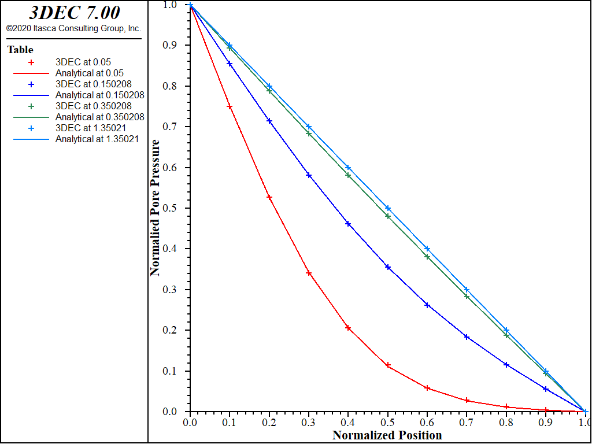
图 9：显式求解算法的超孔隙压力对比（解析值为线，数值值为十字标记）。
一维固结
厚度为 \(H\) = 20 m、水平范围很大的饱和土层（见图 10（Figure 10））位于刚性不透水基底上。在不排水条件下，向土层施加恒定表面荷载 \(p_z\) = 105 Pa。土体基质均质且具有弹性行为；适用各向同性 Darcy 输运定律。施加的压力最初由流体承担，但随着时间推移，流体通过土层表面排出，将荷载转移至土体基质。该一维固结问题的解可在 Biot 理论框架下表示（见 Detournay 和 Cheng 1993）。
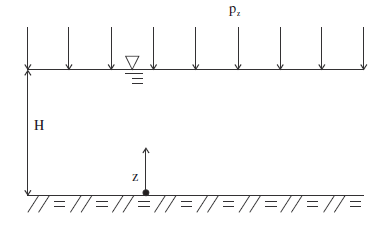
图 10：一维固结。
孔隙压力 \(p\) 的扩散方程形式为
其中：
\(c\) = \(k / S\) ;
\(S\) = \({{1}\over{M}} + {{\alpha^2}\over{\alpha_1}}\) = 储水系数；
\(\alpha_1\) = \(K + {{4}\over{3}} G\) ;
\(M\) = 为 Biot 模量；以及
\(\alpha\) = 为 Biot 系数。
边界条件为：在 \(z = H\) 处，\(\sigma_{zz} = -p_z H(t)\) 且 \(p\) = 0（\(H(t)\) 为阶跃函数）；在 \(z\) = 0 处，\(u_z\) = 0 且 \({{\partial p}\over{\partial z}}\) = 0。
由于应力恒定，式 (60) 简化为
边界条件为：在 \(z = H\) 处，\(p\) = 0；在 \(z\) = 0 处，\({{\partial p}\over{\partial z}}\) = 0。
考虑不排水条件（\(\zeta\) = 0），并使用一维力学本构关系（\({\sigma}_{zz} = \alpha_1 {\epsilon}_{zz} - \alpha p\)）将应变表示为应力的函数，可根据流体本构关系（\(p = M(\zeta - \alpha {\epsilon}_{zz})\)）推导土层加载引起的孔隙压力初值 \(p_0\)。其表达式为
孔隙压力的解为
其中：
\(\hat{p}\) = \({{p}\over{p_z}}\);
\(a_m\) = \({{\pi}\over{2}} (2 m +1)\);
\(\hat{z}\) = \({{H-z}\over{H}}\)；以及
\(\hat{t}\) = \({{ct}\over{H^2}}\).
综合平衡方程 \(\partial {\sigma}_{zz} / \partial z\) = 0 和力学本构方程 \({\sigma}_{zz} = \alpha_1 {\epsilon}_{zz} - \alpha p\)，可求得竖向位移 \(u_z\)。将 \({\epsilon}_{zz}\) 表示为 \(\partial u_z / \partial z\)，结合式 (63) 和边界条件，积分后得到
这里，\({\hat{u}}_z\) 定义为 \({\hat{u}}_z = {{\alpha_1 u_z}\over{H p_z}}\)。
本例指定了以下几项属性：
| 干态体积模量，\(K\) | 5 × 108 Pa |
| 干态剪切模量，\(G\) | 2 × 108 Pa |
| Biot 模量，\(M\) | 4 × 109 Pa |
| Biot 系数，\(\alpha\) | 1.0 |
| 渗透率，\(k\) | 10-10 \({m^2}\over{Pa-sec}\) |
本问题的 3DEC 模型网格是由 20 个单位尺寸网格单元沿 \(z\) 轴排列组成的柱体（见图 11（Figure 11））。柱底固定，\(x\) 和 \(y\) 方向的侧向位移受到约束。柱顶施加力学压力 \(p_z\)。
首先禁止渗流，并对模型步进计算至平衡，以建立初始不排水条件。在这一阶段结束时，应力 \({\sigma}_{zz}\) 的值为 \(-p_z\)，与施加的压力平衡；孔隙压力具有初始不排水值 \(p_0 = \alpha p_z/\alpha_1 S\)（见式 (62)）。然后将柱顶孔隙压力设为零，允许排水。3DEC 模型循环计算至渗流时间 5000 秒，约等于本问题特征时间 \(t_c = H^2/c\) 的量级。
使用 FISH 函数计算柱体半高处孔隙压力 \(\hat{p}\) 和竖向位移 \({\hat{u}}_z\) 的解析解，并随时间推进与数值解比较。图 12（Figures 12） 和图 13 绘出了结果随流体渗流时间的变化。图 14（Figure 14） 展示了孔隙压力向有效应力的转移，给出了归一化总应力 \(-{\sigma}_{zz} / p_z\)、有效应力 \(-({\sigma}_{zz} + p) / p_z\) 和孔隙压力 \(p / p_z\) 随流体渗流时间的演化。3DEC 数据文件列于示例“consolidation.dat——一维固结（consolidation.dat – one-dimensional consolidation）”。对应的项目文件位于“datafiles\Fluid-flow\matrix_flow”文件夹。

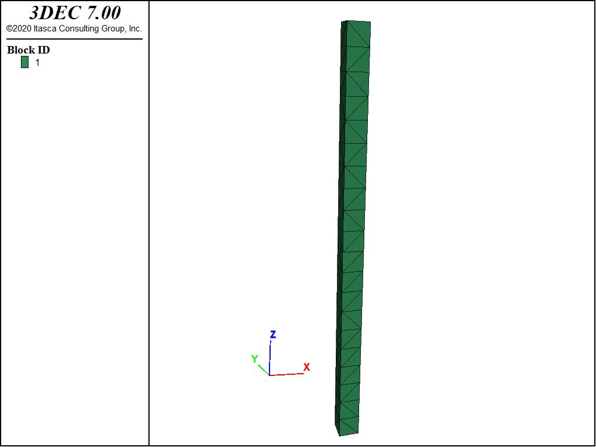
图 11：一维固结的 3DEC 网格。

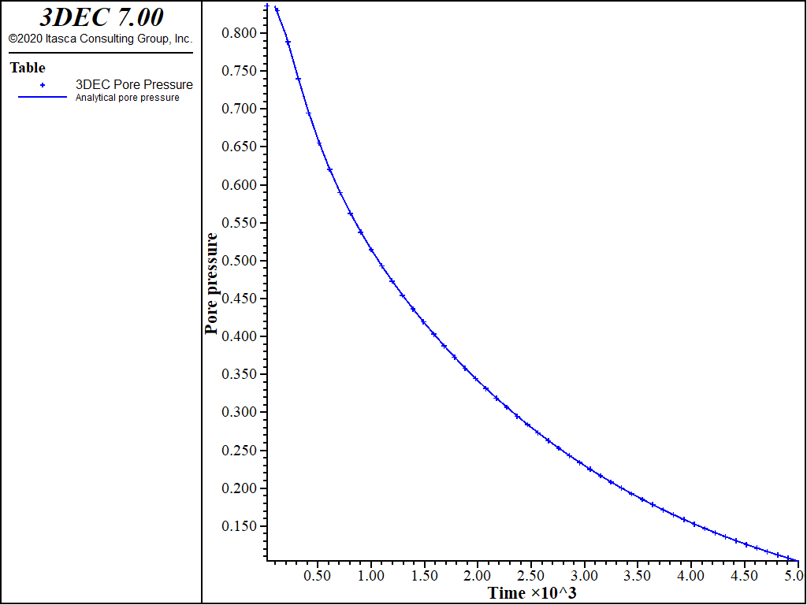
图 12：一维固结试验中柱体半高处孔隙压力解析值和数值值的对比。

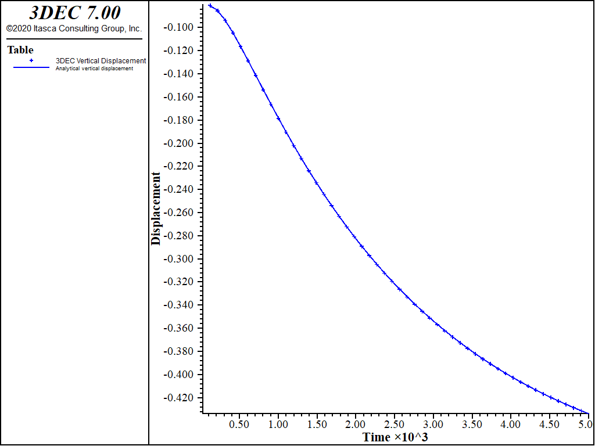
图 13：一维固结试验中柱体半高处竖向位移解析值和数值值的对比。

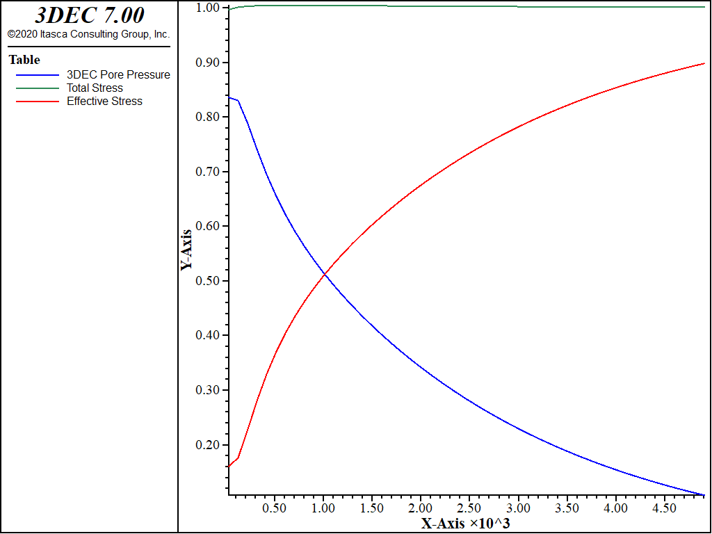
图 14：一维固结试验中孔隙压力、总应力和有效应力的演化。
consolidation.dat——一维固结
model new
fish automatic-create off
model title "One-dimensional consolidation (coupled)"
model config matrixflow
model large-strain off
fish def constants
global c_perm = 1e-10
global c_biotm = 4.e9
global c_bulk = 5.e8
global c_shear = 2.e8
global c_porosity = 0.5
global c_bulkw = c_biotm * c_porosity
local comod = c_bulk + 4. * c_shear / 3.
local storage = 1. / c_biotm + 1.0 / comod
local cv = c_perm / storage
global hh = 20
global bt = cv / (hh * hh)
global pi2 = math.pi * .5
global pz = 1e5
global sig0 = - pz
global p0 = pz / (comod * storage)
global uz0 = pz * hh / comod
end
[constants]
; --- 模型几何形状 ---
block create brick 0 1 0 1 0 [hh]
block zone generate edgelength 1
fish def point
global pnt = block.gp.near(0.,0.,10.)
global zpnt = block.zone.near(0.5,0.5,10.5)
global zz = (hh - block.gp.pos.z(pnt)) / hh
end
[point]
;
; --- 力学模型 ---
block zone cmodel assign elastic
block zone property bulk [c_bulk] shear [c_shear] dens 2000
block gridpoint apply velocity-x 0 velocity-y 0 range position-x -10 10
block gridpoint apply velocity-z 0 range position-z 0
;
block face apply stress-zz [sig0] range position-z 20
;
; --- 流体流动模型 ---
block zone fluid property permeability [c_perm]
block zone fluid property porosity [c_porosity]
block fluid property bulk [c_bulkw]
;
; --- FISH 函数 ---
fish define pp10
pp10 = block.gp.pp(pnt) / pz
global ft = fluid.time.total
global c_szz = block.zone.stress.zz(zpnt) / sig0
global c_eszz = (block.zone.stress.zz(zpnt) + block.zone.pp(zpnt)) / sig0
global c_uz = block.gp.disp.z(pnt) / uz0
global ftbt = ft*bt
end
; --- 历史 ---
fish his pp10
fish his c_szz
fish his c_eszz
fish his c_uz
fish his ft
fish his ftbt
;
; --- 首先建立不排水响应 ---
model fluid active off
model solve ratio 1e-4
model save 'consol-undrained'
;
; --- 排水响应 ---
history purge
flowknot apply pore-pressure 0 range position-z 20
model fluid active on
history interval 2000
model mech slave on
model mech substep 1
;
model solve fluid time-total 5000
;
;
history export '1' vs '5' table '1'
history export '4' vs '5' table '2'
history export '2' vs '5' table '3'
history export '3' vs '5' table '4'
;
table '1' label '3DEC Pore Pressure'
table '2' label '3DEC Vertical Displacement'
table '3' label 'Total Stress'
table '4' label 'Effective Stress'
;
program call 'analytical.fis'
model save 'consol-drained'
program return
| 这些内容对您有帮助吗？… 版权与免责声明 |
FLAC3D © 2019, Itasca | 原文更新于 2020 年 10 月 8 日 |